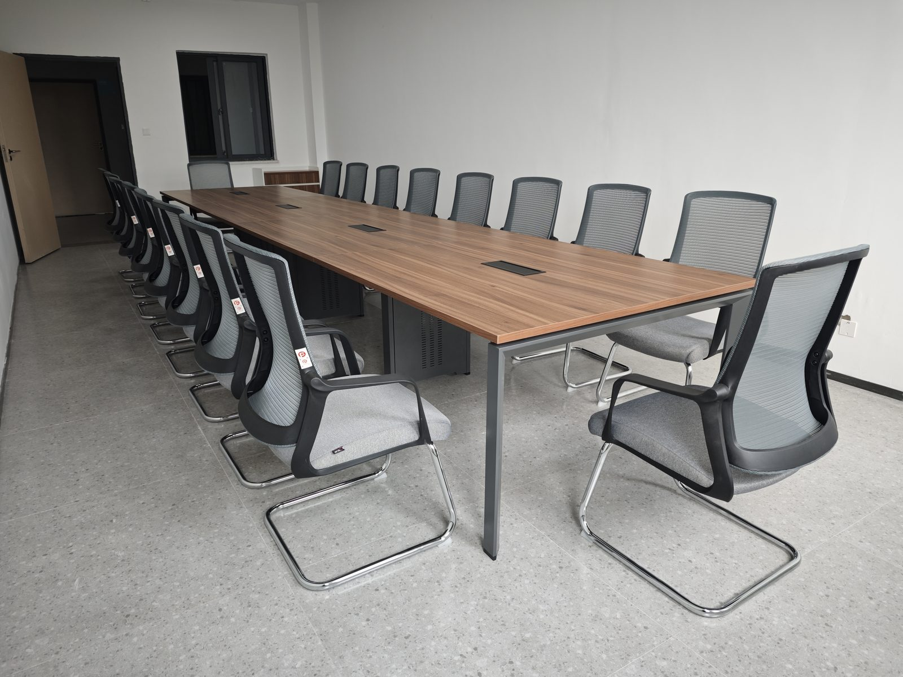

SEO Article
学校家具工程配套需要关注哪些细节？
学校家具项目区域多、数量大、使用频率高，不能只看单件产品价格。
教育空间家具要兼顾安全、耐用和维护
学校家具工程通常覆盖教室、培训室、图书馆、公寓、餐厅、会议室和公共空间。不同场景的人群、使用频率和维护要求不同，产品选择也不能完全一样。
虹桥建议先按空间功能建立清单，再根据使用人数、交付周期、预算和维护要求匹配产品。

SEO Article
学校家具项目区域多、数量大、使用频率高，不能只看单件产品价格。
学校家具工程通常覆盖教室、培训室、图书馆、公寓、餐厅、会议室和公共空间。不同场景的人群、使用频率和维护要求不同，产品选择也不能完全一样。
虹桥建议先按空间功能建立清单，再根据使用人数、交付周期、预算和维护要求匹配产品。
